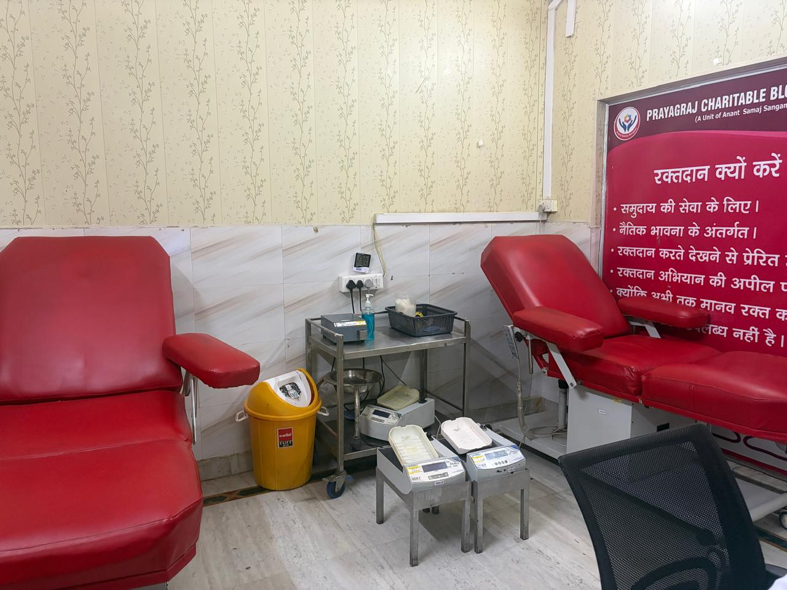
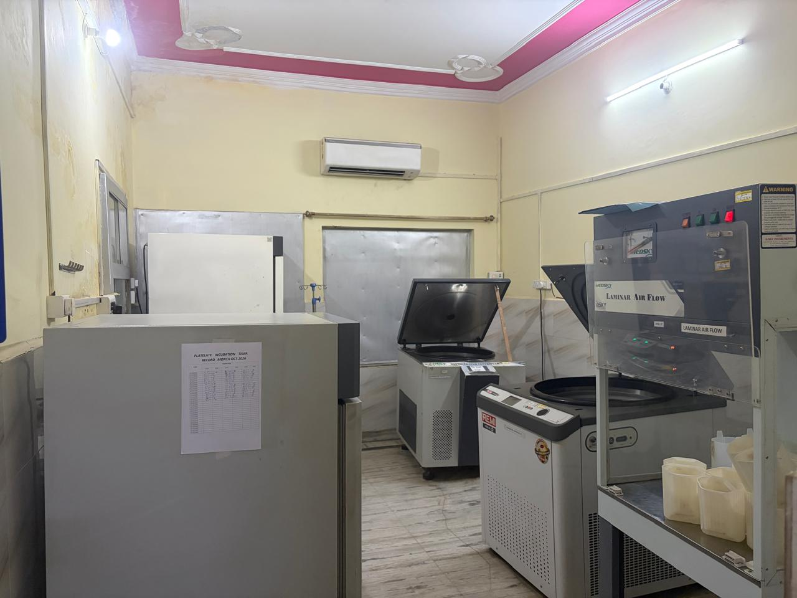
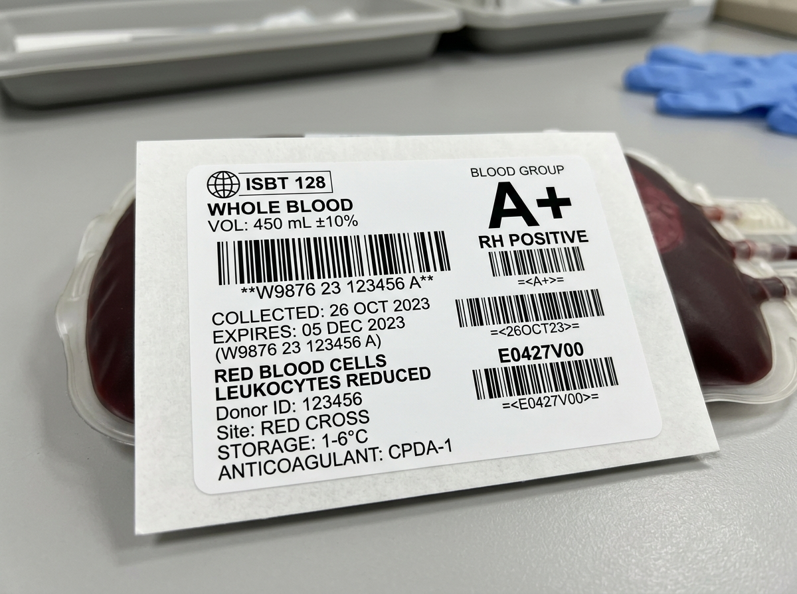
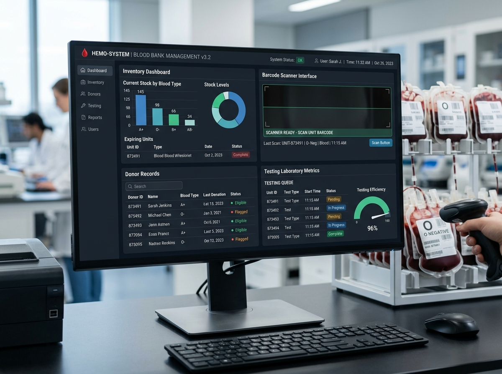

| Particulars | 2025 - 26 | Since Inception |
|---|---|---|
Voluntary Blood Donation camps |
184 | 2,460 |
No. of units collected |
12,850 | 1,48,600 |
No. of components issued |
28,400 | 3,12,000 |
Free & subsidized issues to poor patients, Government Hospitals and Thalassemia patients |
6,420 | 74,500 |
No. of patients impacted |
22,500 | 2,85,000 |
Since its beginning under Anant Samaj Sangam Society, Prayagraj Charitable Blood Centre has grown significantly in clinical scope and community reach, acquiring a benchmark reputation for high quality and safe blood products. Today, it stands as one of the largest regional transfusion centres and specialized component separation facilities in Eastern Uttar Pradesh.
Prayagraj Charitable Blood Centre has prioritized three guiding principles for all its programmes and services. These are quantity, quality, and accessibility.
Foundational pillars driving all operations, clinical protocols, and community donor programs at Prayagraj Charitable Blood Centre.
Prayagraj Charitable Blood Centre's blood collection has grown steadily over the years and currently reaches around 12,850 units of voluntary donor blood annually.
Active voluntary donor base of over 45,000 donors, supporting over 150 higher education institutes, universities (MNNIT, Allahabad University, CMP College), IT companies, and social welfare organizations.
100% voluntary donor selection with zero commercial replacement. Every unit undergoes rigorous screening for the 5 mandatory TTIs (HIV 1/2, HBV, HCV, Malaria, Syphilis).
Dual testing with 4th Generation Chemiluminescence (CLIA) and Individual-Donor NAT (Nucleic Acid Amplification) to eliminate viral window periods.
Round-the-clock 24/7 emergency dispatch and doorstep delivery to hospitals in insulated, cold-chain containers across Prayagraj, Kaushambi, and Pratapgarh.
Statutory processing fees are 100% waived for pediatric Thalassemia patients, Government Hospitals, and indigent families in Eastern Uttar Pradesh.

Donor comfort, safety, and confidentiality are our highest priorities. Our modern phlebotomy suite in Tagore Town features automated donor couches, pre-donation clinical evaluation stations, and dedicated medical staff trained in painless venipuncture.
We adhere strictly to NBTC and WHO guidelines, ensuring all donors receive post-donation refreshments, health advisory, and confidential donor reports.
All collected blood is fractionated into specialized therapeutic components to maximize therapeutic efficacy and save multiple lives per unit.

Whole blood is fractionated inside high-capacity refrigerated centrifuges within sterile closed-system quad bags. The red cells, platelets, and plasma are separated into dedicated therapeutic components, ensuring each patient receives precisely the component required.
This prevents circulatory volume overload and allergic reactions associated with whole blood transfusions while optimizing regional blood inventory.
Essential for trauma haemorrhage, road traffic accidents, acute anaemia, major surgical blood loss, and regular life-saving transfusions for Thalassemia children.
Critical in acute dengue thrombocytopenia, oncology chemotherapy, bone marrow disorders, acute bleeding diathesis, and complex cardiac surgeries.
Provides all active coagulation factors for severe liver disease, burns, Disseminated Intravascular Coagulation (DIC), and massive transfusion protocols.
Concentrated Factor VIII, Fibrinogen, and von Willebrand factor for Hemophilia A, von Willebrand Disease, hypofibrinogenemia, and uremic bleeding.
Prayagraj Charitable Blood Centre houses dedicated automated Apheresis cell separators. Single Donor Platelets (SDP) are collected directly from a single voluntary donor within a sterile closed tube set while red cells and plasma are safely returned back to the donor. One therapeutic SDP unit yields the equivalent of 6 to 8 regular random platelet units (RDP), significantly reducing donor exposure and antibody sensitization in cancer and dengue patients.
Prayagraj Charitable Blood Centre has instituted a total Quality Management System compliant with National Accreditation Board for Hospitals (NABH) standards.
As a key contributor to blood safety, blood is collected from voluntary donors only. Donor selection is based on detailed medical history, risk factor questionnaires, pre-donation counseling, and clinical examination.
WHO studies prove that voluntary donations have significantly lower infection markers compared to commercial replacement donors. Over 90% of our donors are young, healthy individuals aged 18 to 35.
As per strict Drug Control mandates, every single unit of blood is rigorously screened for the five mandatory transfusion transmissible infections:
Routine screening tests only detect viral antibodies or antigens after the immune response has developed, leaving an infectious "window period" (WP) of several weeks.
At Prayagraj Charitable Blood Centre, every unit undergoes dual testing:
Most blood banks test only major ABO & Rh D groups. Prayagraj Charitable Blood Centre performs advanced automated gel-card phenotyping for Major and Minor blood systems: Rh (C, c, E, e), Kell, M, N, S, and Duffy.
Hospitals across Prayagraj and Eastern UP refer difficult problem crossmatches and alloantibody cases to Prayagraj Charitable Blood Centre for specialized antibody identification and compatible component release.
Maintaining complete vein-to-vein documentation and tracing the history of every single unit—from donor registration and testing to component fractionation and bedside transfusion.

All blood units, pilot tubes, test samples, donor registration forms, and issue documentation are labeled using internationally standardized ISBT 128 barcode symbology.
Guarantees zero manual labeling error, automated sample barcode scanning, and foolproof traceability from donor arm to recipient vein.

Reaching life-saving blood components to rural and urban hospitals, with 100% processing waivers for poor patients and pediatric Thalassemia.
Prayagraj Charitable Blood Centre operates 24 hours a day, 365 days a year with doorstep delivery to over 40 regional hospitals across Prayagraj, Kaushambi, and Pratapgarh that lack their own component separation facilities.
Blood itself is never sold. Statutory service charges towards voluntary camp collection, NAT/CLIA testing, sterile quad bags, and cold storage are recovered strictly as per NBTC / National Blood Policy norms.
✓ All processing charges are 100% waived for poor patients, Government Hospitals, and pediatric Thalassemia children.
Patients requiring rare blood types face critical delays during acute emergencies. Prayagraj Charitable Blood Centre maintains a confidential registry of donors with Rh-Negative (O-, A-, B-, AB-) and rare minor phenotypes (such as Bombay Blood Group, Anti-M, Kell, and Duffy).
These registered lifesavers are alerted during emergency crossmatch crises to donate blood for multi-transfused cancer patients and Thalassemia children.
Actual immunohematology problem crossmatch cases solved by our clinical transfusion specialists.
A 28-year-old mother underwent LSCS delivery. After 18 hours, the newborn developed severe hemolytic jaundice with serum bilirubin surging to 24 mg/dL. Direct Antiglobulin Test (DCT) was strongly positive (3+).
Both mother and baby were O Positive, but the mother’s plasma reacted against all routine panel cells. Prayagraj Charitable Blood Centre immunohematologists phenotyped the mother and identified an extremely rare D-- phenotype with Anti-Rh17 antibodies. Coordinated supportive IVIG, serial phototherapy, and specialized exchange transfusion led to complete recovery.
A 2-year-old trauma victim was rushed to intensive care with massive haemorrhage. The child was A Positive, but every unit of routine crossmatched blood in the hospital was incompatible.
Emergency sample dispatch to Prayagraj Charitable Blood Centre laboratory revealed an atypical Anti-M antibody reactive at 37°C. After phenotyping more than 20 inventory units, compatible M-negative units were identified, crossmatched, and dispatched within 45 minutes for life-saving surgery.